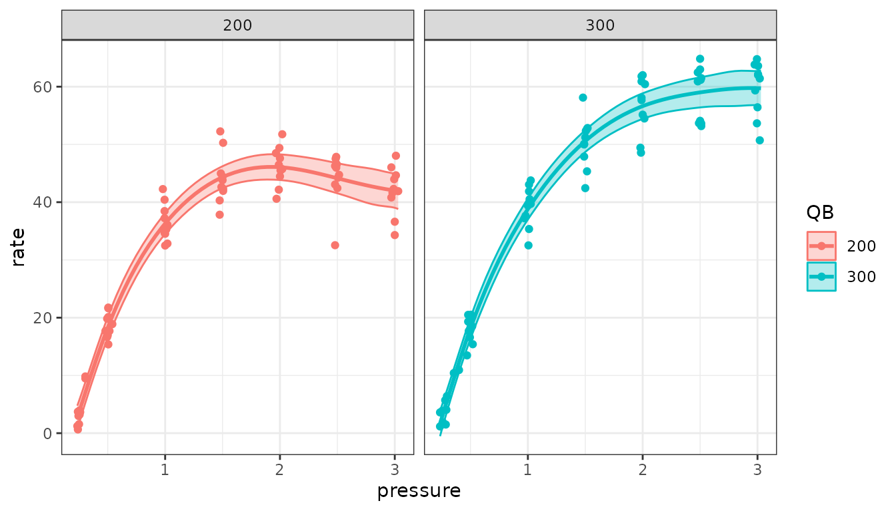
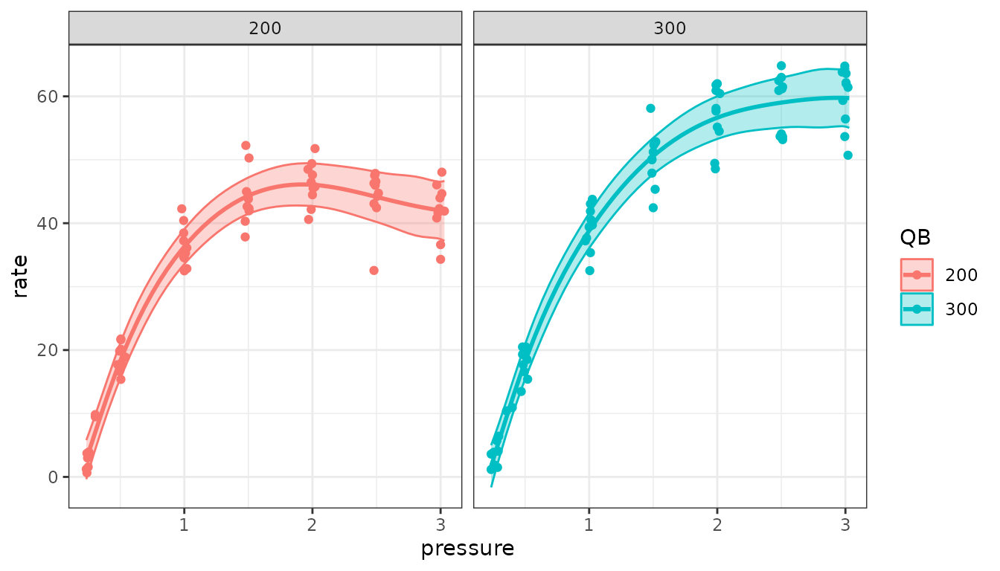
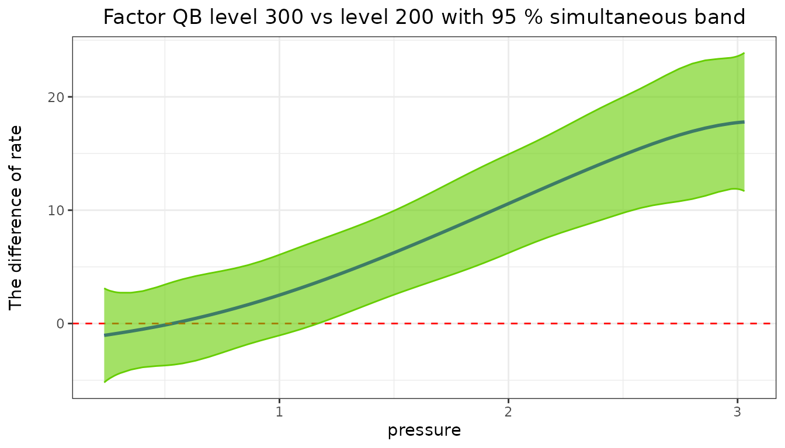

When a response changes with a covariate along a curve whose shape is
not known, semireg() fits it as a penalized spline inside a
linear or generalized linear mixed model (Ruppert, Wand and Carroll
2003). The spline’s wiggly part is a random effect, so the amount of
smoothing is estimated by REML along with the other variance components,
and the usual mixed-model tools apply. semipred() predicts
the curves with confidence bands; predictmeans() gives
means and comparisons of factor levels with the smooth included.
Data and model
The Dialyzer data (package nlme) give the
ultrafiltration rate of 20 dialyzers at seven transmembrane pressures,
at two blood flow rates (QB, 200 or 300 dl/min).
library(predictmeans)
data(Dialyzer, package = "nlme")
Dialyzer <- as.data.frame(Dialyzer)The rate rises with pressure and levels off. The model has a linear
trend for each blood flow rate, a smooth departure from it for each rate
(smZ(..., by = QB, group = TRUE)), and a random intercept
and slope for each dialyzer:
fm <- semireg(rate ~ pressure * QB + (pressure | Subject),
smoothZ = list(qb = smZ(pressure, k = 4, by = QB, group = TRUE)),
data = Dialyzer, prt = FALSE)k is the number of interior knots of the spline.
fm$semer is the fitted mixed model, so the usual tests
apply. ranova() tests the random terms, including the
smooth: a significant smooth term means the curve is not a straight
line.
ranova(fm$semer)
#> ANOVA-like table for random-effects: Single term deletions
#>
#> Model:
#> rate ~ pressure * QB + (pressure | Subject) + (1 | qb.200) + (1 | qb.300)
#> npar logLik AIC LRT Df Pr(>Chisq)
#> <none> 10 -355.62 731.25
#> pressure in (pressure | Subject) 8 -505.22 1026.45 299.20 2 < 2.2e-16 ***
#> (1 | qb.200) 9 -476.39 970.78 241.53 1 < 2.2e-16 ***
#> (1 | qb.300) 9 -468.27 954.54 225.29 1 < 2.2e-16 ***
#> ---
#> Signif. codes: 0 '***' 0.001 '**' 0.01 '*' 0.05 '.' 0.1 ' ' 1Curves with confidence bands
cur <- semipred(fm, "QB", "pressure", prt = FALSE)
head(cur$pred_df)
#> QB pressure SE rate LL UL
#> 1 200 0.235 1.0383106 2.720145 0.6850933 4.755196
#> 2 200 0.240 1.0224196 3.029840 1.0259346 5.033746
#> 3 200 0.245 1.0080356 3.339669 1.3639559 5.315383
#> 4 200 0.250 0.9950326 3.649588 1.6993598 5.599816
#> 5 200 0.255 0.9832890 3.959551 2.0323399 5.886762
#> 6 200 0.260 0.9726889 4.269514 2.3630792 6.175950
cur$plt
The band is pointwise: at each pressure it covers the true curve with
95% probability (level = 0.05). Before version 2.0 these
limits were 90% limits; level = 0.1 gives them.
A simultaneous band covers the whole curve at once with 95% probability, so it is wider. Use it to judge the shape of the curve over its whole range:
sim <- semipred(fm, "QB", "pressure", simultaneous = TRUE, prt = FALSE)
crit <- (sim$pred_df$UL - sim$pred_df$rate) / sim$pred_df$SE
c(pointwise = qnorm(0.975), simultaneous = crit[1])
#> pointwise simultaneous
#> 1.959964 2.957617
sim$plt
The critical value comes from 10,000 draws of the estimates’ distribution, with a fixed seed, so the band is the same each time.
Where do the curves differ?
contr gives the difference between two curves, here 300
minus 200 dl/min, with its band. Where a simultaneous band excludes
zero, the curves differ, with the error rate controlled over the whole
range of pressures. Here the higher blood flow rate gives a higher
ultrafiltration rate from a pressure of about 1.2 upwards:

Means of factor levels
predictmeans() accepts a semireg() fit. The
means of the blood flow rates include the smooth (as
semipred() gives at the same pressure), at the mean
pressure or at values given by name:
predictmeans(fm, "QB")
#> Predicted means of 'QB' from a semireg model (smooth terms included)
#>
#> QB estimate std.error df conf.low conf.high group
#> 200 44.66 0.9740 Inf 42.75 46.56 A
#> 300 51.21 0.9723 Inf 49.31 53.12 B
#>
#> Pairwise comparisons (normal-based; p.adj: none)
#>
#> level1 level2 estimate std.error df statistic p.value p.adj p.method
#> 200 300 -6.557 1.376 Inf -4.764 1.894e-06 1.894e-06 z
predictmeans(fm, "QB", covariate = c(pressure = 1))$means
#> QB estimate std.error df conf.low conf.high group
#> 1 200 36.30263 0.9244857 Inf 34.49067 38.11459 A
#> 2 300 38.81293 0.9262721 Inf 36.99747 40.62839 AThe tests are normal-based, as in semipred().
More
-
?semireg,?semipred,?smZ;semireg_tmb()fits the same models with glmmTMB, which also allows negative binomial and other families. - The worked examples on the package website use larger data sets (apartment prices, school scores, respiratory infections, pollen counts and a spatial smooth of copper grades).